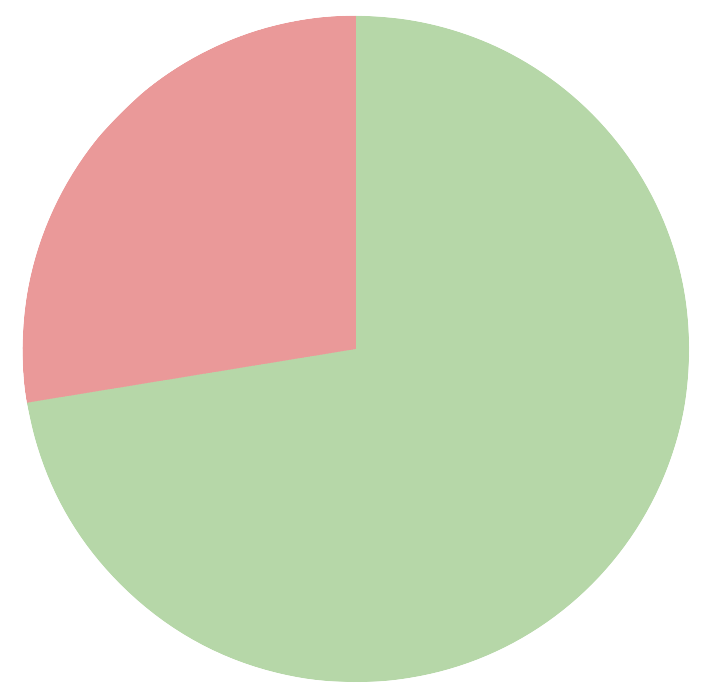
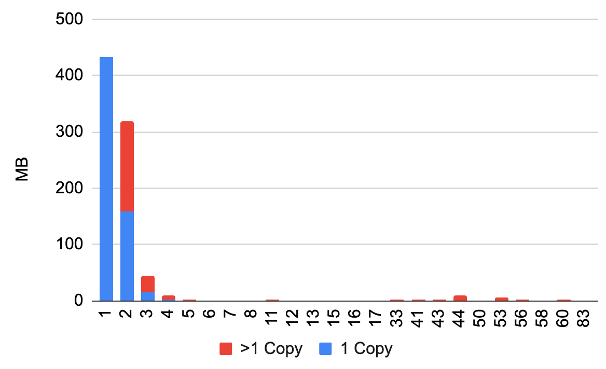

I did a data cleanup over the weekend. I doubt this is interesting
for anyone else, I just wanted to capture my own notes.
Our family photos are stored up in Google Photos. We have about
100k photos and short movies that take up 0.5TB. I wanted to back
up to local storage, but also I liked the idea of trying the
mdisc format for long-term storage.
I ran Takeout and unzipped everything. I was surprised to see
so many duplicates. Some are copies in the same folders with suffixes
like "(1)", most are multiple copies in different folders.
Takeout seems to just store a copy for each album a photo is in.
Some poking at the data shows 88% of 302,755 files / 72% of
the bytes were unique (histogram at the bottom of the post). Removing
dups can save 200+GB. Sure not really worth the trouble but why
not.
Steps
1. On the NAS, gather file checksums (md5sum) and sizes for all
the files under Takeout/Google Files. Mostly variations on
of find -print0 | xargs -0.
2. Data cleanup to get into nice file paths and clean delimiters,
mostly interactively with vi.
3. Insert into sqlite using .separator and .import.
Here's what the database ended up looking like: Photos and Sizes
are inputs, HashCounts, Duplicates, and Candidates are
outputs.
CREATE TABLE Photos(hash TEXT,path TEXT);
CREATE TABLE Sizes(size INT,path TEXT);
CREATE TABLE HashCounts(hash TEXT,found INT);
CREATE TABLE Duplicates(path STRING,hash STRING,found INT,size INT);
CREATE TABLE Candidates(path STRING,hash STRING,size INT,pos INT);
4. Find the dups. I'm surprised to find some with 50 or more copies,
but it out some family favorites end up in lots of albums.
insert into HashCounts
select hash, sum(1) as found from Photos group by hash;
5. Figure out candidates for deletion
insert into Duplicates
select Photos.path, Photos.hash, HashCounts.found, Sizes.size
from Photos, HashCounts, Sizes
where HashCounts.hash=Photos.hash and Photos.path=Sizes.path
and HashCounts.found > 1;
The first of each set is the one we'll keep.
insert into Candidates
select *
from (select path, hash, size, row_number() over (partition by hash) as row_number
from (select * from Duplicates order by hash, path desc)
) where row_number > 1;
I was surprised that sqlplus supports window functions, nice.
The inner reverse-alpha sort on "path" takes care of two cases.
I tend to prefer keeping photos with names that start with
years, and Those come first alphabetically (nice). Also within
folders often there are many copies with "(1)" and "(2)" suffixes
that are generally cruft and most worthy of removing, and those
also sort last alphabetically (nice).
5. Dump out the "Candidates" using .output. Copy back to the NAS.
Do lots of spot checks. Convert to a bash script of rm commands,
run very carefully.
Tools
Sqlite is my go-to tool for ad-hoc work like this. It's fast
and simple, but only for small jobs -- this one is MB-scale.
select name, sum(pgsize) from dbstat group by name;
name sum(pgsize)
------------- -----------
Candidates 3006464
Duplicates 5541888
HashCounts 11051008
Photos 23240704
Sizes 13807616
sqlite_schema 4096
My Synology is a pretty good place for storage with ability to
ssh in and run local commands. But if I had to do this again,
though, I should have just bought a large locally-connected SSD.
All the transfers to-from the NAS were a hassle. Looking now I'm
stunned that you can get a 4 TB external SSD for under $300.
Some private notes here.

(source)